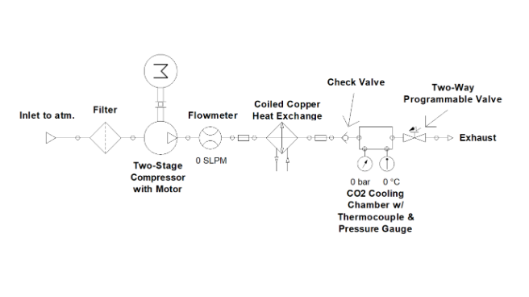
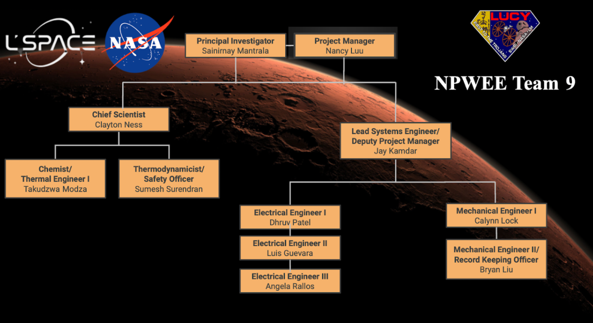

PRINCIPAL INVESTIGATOR PROJECT
As Principal Investigator, I led a multi-university team to propose a novel thermal management system for short-term, high-power electronics on Mars. The system leverages the sublimation of CO2 from Mars’ atmosphere to absorb heat from critical devices, enabling efficient cooling without the mass and complexity of traditional closed-loop fluid systems.
The project aimed to design a functional prototype capable of absorbing 100 Watts of heat over a 3-hour period. Our approach combined thermodynamic analysis, system modeling, and project management of a diverse student team.

CO2 Flow Schematic
CO2 PHASE-CHANGE COOLING
The system collects CO2 from the Martian atmosphere during colder night periods, compresses and deposits it into a storage chamber as solid dry ice, and releases it to absorb heat when cooling is required. This process exploits the high latent heat of CO2 sublimation to efficiently manage short-term heat loads on electronic sensors and subsystems.
Using this method, we evaluated the feasibility of a lightweight, scalable, and multipurpose cooling unit that could be adapted to robotic systems or habitat modules, with potential secondary uses for cleaning, decontamination, or metal cooling.

Organizational Chart
LESSONS FROM LEADING A STUDENT RESEARCH TEAM
- Leading a multidisciplinary, multi-university team reinforced the importance of clear roles, scheduling, and communication.
- Hands-on thermodynamic and thermal system analysis complemented project management and technical leadership skills.
- Understanding phase-change heat transfer and CO2 thermophysical properties was critical for design feasibility.
- Early-stage prototyping decisions required balancing complexity, mass, and energy efficiency for Martian conditions.
- Documenting and structuring a formal NASA proposal honed technical writing and project planning abilities.